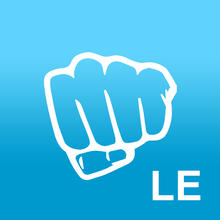

class: full-image <div class=bg style=background-image:url(http://i.imgur.com/fTHgot9.jpg)> </div> --- class: center, middle ## Hvem er vi?  ??? - Dette kurset vil bli filmet, hvis noen ikke vil være med på filmen, si i fra så skal vi anonymisere deg - Filmen er for vår egen del, vi ønsker å lære mer og bli bedre på kurs - Først og fremst takk til fagkom for muffins og kaffe - 4.-5. klasse data@NTNU - Blåtannfrelste personligheter - Laget et open source blåtannbibliotek for mbed i forbindelse med sommerjobb hos Nordic Semiconductor --- class: full-image <div class=bg style=background-image:url(http://i.imgur.com/RQhUngO.jpg)> <h1 style=margin:0;padding:0;padding-top:10px;color:black;text-align:center>Hvem var Harald Blåtann?</h1> </div> ??? - Konge av Danmark(~958-986) og Norge(~970-975/986) - Samlet alle Danske stammer til ett forent rike og introduserte kristendom - Opphavet til navnet Bluetooth da denne teknologien skal samle alle kommunikasjonsprotokoller til én standard --- class: full-image <div class=bg style=background-image:url(http://upload.wikimedia.org/wikipedia/commons/e/ea/Harald_bluetooth.PNG)> </div> ??? Harald's kingdom (in red) and his vassals and allies (in yellow), --- class: center, middle # Hvorfor 'Blåtann'? ??? - Sagnene sier at Harald hadde en død tann og at dette er grunnen til navnet - MEN! **// bytt slide** --- class: center, middle, hb-info ??? - Dette bildet vi fant på internett sier helt klart og tydlig at `tand er et gammelt ord for høvding` - Det sier også at `blå betød sort på den tida` - Dermed kan det bety at hans navn egentlig var `den mørke høvdingen` - **// Kunsterisk pause til stående applaus** --- class: center, middle # Dette kurset ## 3 timer - Blåtann - mbed - Hjelpemidler ## 3 oppgaver Lag en mbed med blåtann Chat fra telefonen til mbed-en Something, something, third task ??? - Vi holder korte foredrag om teknologi fulgt av oppgaver - Under oppgavene går vi rundt og hjelper til, rekk opp hånda om dere trenger hjelp - Vi tar ca et kvarters pause mellom hver oppgave --- class: center # http://bftj.co  ??? - Vi har en nettside, som inneholder **guider**, **oppgavene**, **slides** osv - Bruk denne som ressurs når du jobber - Denne er tilgjengelig også etter kurset så den kan brukes om du trenger hjelp senere --- class: full-image <div class=bg style=background-image:url(http://i.imgur.com/ESUO88n.png)> <h1 style=padding:0;margin:0;padding-top:1em;text-align:center> Bluetooth Low Energy </h1> </div> ??? Kjært barn har mange navn (1/4) --- class: full-image <div class=bg style=background-image:url(http://i.imgur.com/ESUO88n.png)> <h1 style=padding:0;margin:0;padding-top:1em;text-align:center> Bluetooth Smart </h1> </div> ??? Kjært barn har mange navn (2/4) --- class: full-image <div class=bg style=background-image:url(http://i.imgur.com/ESUO88n.png)> <h1 style=padding:0;margin:0;padding-top:1em;text-align:center> Bluetooth 4.0 </h1> </div> ??? Kjært barn har mange navn (3/4) --- class: full-image <div class=bg style=background-image:url(http://i.imgur.com/ESUO88n.png)> <h1 style=padding:0;margin:0;padding-top:1em;text-align:center> BLE </h1> </div> ??? Kjært barn har mange navn (4/4) --- class: full-image <div class=bg style=background-image:url(http://i.imgur.com/qA5CTbm.jpg)> </div> ??? - Bluetooth er en protokoll for kommunikasjon mellom enheter - Kort rekkevidde på kommunikasjonen - Starter med å annonsere at den finnes -> med info som navn, adresse og liknende - Når noen kopler seg til forteller den hva den kan tilby (hvilke services den har) - D2D == "device to device" - trådløs på samme frekvenser som wifi, altså 2.4Ghz --- class: full-image <div class=bg style=background-image:url(http://i.imgur.com/7w66Ovp.png)> </div> ??? BLE er ikke dette --- class: full-image <div class=bg style=background-image:url(http://i.imgur.com/SUOxuUi.png)> </div> ??? - Example of what is possible with BLE - Neo smart jar - "The worlds first smart jar" --- class: full-image <div class=bg style=background-image:url(http://launch.it/sites/default/files/full%20jar_Rev.png)> </div> ??? - Example of what is possible with BLE - Neo smart jar - "The worlds first smart jar" --- class: full-image <div class=bg style=background-image:url(http://i.imgur.com/h3GRHnC.jpg)> </div> ??? - Example of what is possible with BLE - "Tile is the smart companion for all the things you can't stand to lose." - aldri mist noe igjen --- class: full-image <div class=bg style=background-image:url(http://i.imgur.com/udn6yQH.jpg)> </div> ??? - Example of what is possible with BLE - moto360 - smartwatches - apple watch --- class: full-image <div class=bg style=background-image:url(http://i.imgur.com/RGr7XEj.png)></div> ??? - IBeacon - BLE-basert - Passiv - Innendørs lokasjon, kontekst - Apple, Android, etc, .. --- class: full-image <div class=bg style=background-image:url(http://i.imgur.com/A8mSBD7.jpg)></div> ??? - Et eksempel: Estimote. - Få tilbud på telefonen når du er i butikken --- class: full-image <div class=bg style=background-image:url(http://i.imgur.com/ViT63Zx.png)></div> ??? - Slik ser den ut inni - egentlig bare en slik *holde opp en mbed* pakket inn i et pent skall - fun fact: man kan lage en slik i dette kurset med bare 3 (?) linjer med kode - se hvor liten den egentlig er, lett å tro at den er stor på bildet i forrige slide --- class: full-image <div class=bg style=background-image:url(http://i.imgur.com/bsonCv4.png)></div> ??? - IBeacon er en del av Internet of Things, og BLE er katalysatoren som får Internet of Things til å skje --- class: full-image <div class=bg style=background-image:url(http://i.imgur.com/hdBgMkO.png)></div> ??? - Lavterskeltilbud til lavnivåprogrammering --- class: full-image <iframe width=100% height=100% src="https://www.youtube.com/embed/uderjjF30Vg" frameborder="0" allowfullscreen></iframe> ??? IoT-film som ARM har laget, morsomt å vise fram --- class: full-image <div class=bg style=background-image:url(http://i.imgur.com/k0L5jzA.jpg)></div> ??? - nrf51-dk (development kit) - mbed - Nordic først ute med BLE på mbed, BLE veldig viktig for IoT+mbed - Arduino-shield-compatible pins - Takk til Nordic for donasjon av mbedsene dere ser her. Hver gruppe skal få med seg en hjem til odel og eie. - pek forskjellige deler av brettet, si hva som er hva - vis hvor sykt liten selve chipen er! --- class: full-image <div class=bg style=background-image:url(http://i.imgur.com/g3TUjmT.png)></div> ??? - Utviklingsmiljøet i nettleseren - Drag & drop-installering - Plug mbed-en i PC-en og den likner på en USB - Man utvikler og skriver kode i nettleseren med dokumentasjon og liknende - Trykker på en knapp i nettleseren for å laste ned en fil med koden din - Dra denne filen over til mbed-en for å installere kode på mbeden --- class: full-image <div class=bg style=background-image:url(http://i.imgur.com/2laMTrt.png)></div> # C++ ??? - Utviklingsspråket til mbed - Høynivåspråk i embedded-verden - Brukes mest til spill-programmering, OS-programmering, high performance ting - (Håndsopprekning) Hvor mange har jobba i C++ før? - Som om C og Java hadde et barn - C++ gir oss klasser og andre hjelpmidler når vi utvikler - Finnes mange bra bibliotek og andre ressurser - De som trenger en kjapp gjennomgang av hvordan ting gjøres kan se på guiden vår på sida --- class: center, middle # Puck-biblioteket Open source Skrevet av oss Enkelt ??? - Fullt open source-bibliotek alle kan bidra til og jobbe med - Laget av oss i sommer for Nordic - Abstraherer bort mye av kompleksiteten til Blåtann --- class: full-image <div class=bg style=background-image:url(http://i.imgur.com/WJAuxiP.png)> </div> ??? Hvorfor vi lagde libbet: - dette er sånn et enkelt eksempel så ut uten libbet i sommer --- class: center, middle ```cpp #define LOG_LEVEL_INFO #include "Puck.h" Puck* puck = &Puck::getPuck(); int main(void) { // Initialize the puck puck->init(0xFEED); // Let the puck do its thing while(puck->drive()); } ``` ??? Hvorfor vi lagde libbet: - her er det samme med puck-libbet - nå skal det sies at mye har endret seg i mbed-verdenen siden i sommer, og det er bedre enn før å ikke bruke libbet - libbet fortsatt lettest - det vi ønsker er at libbet ikke skal trengs tilslutt, fordi vanlig mbed har fått alle featuresene vi har i libbet også --- class: center, middle # En rask gjennongang av hvordan man jobber på mbed ??? - Skriv noe kode i compileren - Last ned `.hex`-filen - Last over på mbed-en - Trykk på reset - Fortell hva du gjør mens du gjør det --- class: center # Debugging med telefon  ??? LightBlue til iOS B-BLE til Android Koble til BLE-enheter, skriv/les til dem --- class: center, middle #### Underveisoppsummering: # Harald Blåtann # BLE # IBeacon, IoT, Wearables # Mbed ... --- class: center, middle ... # C++ # Puck-biblioteket # Debugging med telefon --- class: center, middle # Oppgave 1 ## Koble til mbed ### http://bftj.co/exercise-1 ??? - Oppgaven ligger på http://bftj.co - Dere skal lage en Blåtannenhet som kan koples til og fra ved hjelp av mbed og Puck-biblioteket - Dere har ~30 min på dere og vi går rundt --- class: center, middle # SPOILER ALERT Løsningsforslag for oppgave 1 følger --- class: center, middle # LF oppgave 1 ```cpp #include "Puck.h" Puck* puck = &Puck::getPuck(); int main(void) { // Initialize the puck puck->init(0xFEED); // Let the puck do its thing while(puck->drive()); } ``` ??? - Så enkelt er det! - Du vil nå kunne finne mbeden (pucken som vi kaller det) i Blåtann-appene dine --- class: center, middle # Blåtann LE Primer --- class: center # Blåtann LE Primer <img alt="One does not simply open a BLE socket and start pumping data" src=/images/ble-guide-simply.jpg style="width: auto"> ??? - Blåtann er ikke wifi! - kan ikke gjøre posts, get, http, sockets, etc - er en egen måte å gjøre ting på For å oppnå lavt energibruk, og en effektiv og tilpasset protokoll er det masse rare konsepter man må bruke. Det fins ikke "BLE sockets" man bare kan pumpe full av data som om man snakket med en server over TCP. Istedet opererer man med services og characteristics, som vi skal komme tilbake til. ---  ??? Energieffektiv over korte avstander Reklamerer jevnlig for dens "services" "services" tilbys etter tilkobling Pauser så reklamering til koblingen avslutter Reklamen inneholder ting som - navn - adresse - UUIDer på tjenester og karakteristikker --- class:center  ??? - pek på sliden, kom på eksempler --- class: center # Services ### En "service" er en samling data. ### F.eks. tempraturmåling fra termometer, hjerterytme fra pulsklokke etc. ### Hver "service" kan ha flere "characteristics" --- class: center # Characteristics ### Er 20-bytes variabler som aksesseres over BLE ### Kan tilby lesing, skriving, varsel m.m. ### Hjerterytmeservicen kan ha "heartrate" og "bodylocation" characteristics --- class: center # Eksempel fra puck-biblioteket ```cpp const UUID SAMPLE_GATT_SERVICE = stringToUUID("my service uuid "); const UUID SAMPLE_GATT_CHARACTERISTIC = stringToUUID("characteristiiic"); ``` --- class: center # Eksempel fra puck-biblioteket ```cpp puck->addCharacteristic( SAMPLE_GATT_SERVICE, SAMPLE_GATT_CHARACTERISTIC, 20, GattCharacteristic:: BLE_GATT_CHAR_PROPERTIES_WRITE | GattCharacteristic:: BLE_GATT_CHAR_PROPERTIES_READ); ``` --- class: center, middle # Print debugging ??? - det går også an å bruke gdb, osv, men det må settes opp - print-debugging er greit å ha --- class: center # Print debugging ### Skrive ut data fra program til stdout ```cpp printf("My %s is %d characters long!", "superstring", 42); ``` ### Men mbed har ingen stdout! ```cpp // Serial over USB, could be over GPIO Serial usb(USBTX, USBRX); // Print over the serial connection usb.printf("Hello World"); ``` ??? - Må ha et program for å ta i mot dataen --- class: center # Logging med pucklibbet ### Implementert med macroer (forsvinner i prod) ```cpp #define LOG_LEVEL_INFO #include "Puck.h" char s[] = "info"; LOG_INFO("Such print, very %s.", s); ``` ### Vil printe "[I] Such string, very info." ??? Strenger i c++ er, i likhet med strenger i c, nullterminerte. Log level makroer også tilgjengelig for ERROR, WARN, INFO, DEBUG, VEROSE. --- class: center # Det endelige resultat  ### Full seriell-guide på [/guides/serial](/guides/serial.html) --- class: center, middle # Print debugging tar tid ??? - det destroyer ytelse - kan til og med endre oppførsel på programmet hvis ting må være realtime --- class: full-image <div class=bg style=background-image:url(http://nordicsemiconductor.github.io/puck/images/IR-nofilter.jpg)> </div> ??? - fortell historien om hvordan print-debugging ødela ir-pucken --- class: center, middle #### Underveisoppsummering: # BLE Primer # Print debugging --- class: center, middle # Oppgave 2 ### http://bftj.co/exercise-2 --- class: center, middle # SPOILER ALERT Løsningsforslag for oppgave 2 følger --- class: center # LF oppgave 2 ```cpp const UUID SAMPLE_GATT_SERVICE = stringToUUID("bftj sample "); const UUID SAMPLE_GATT_CHARACTERISTIC = stringToUUID("bftj sample char"); ``` --- class: center # LF oppgave 2 ```cpp puck->addCharacteristic( SAMPLE_GATT_SERVICE, SAMPLE_GATT_CHARACTERISTIC, 20, GattCharacteristic:: BLE_GATT_CHAR_PROPERTIES_WRITE | GattCharacteristic:: BLE_GATT_CHAR_PROPERTIES_READ); ``` --- class: center # LF oppgave 2 ```cpp // Bind handler puck->onCharacteristicWrite( &SAMPLE_GATT_CHARACTERISTIC, onMessageReceived); // Finalize puck puck->init(0xFFFF); // Hand over control to the BLE-stack while(puck->drive()); ``` --- class: center # LF oppgave 2 ```cpp void onMessageReceived( const uint8_t* value, uint8_t length) { LOG_INFO( "Received message of %d bytes: %.*s\n", length, length, value); } ``` --- class: center, middle #Interrupts --- class: center, middle #Interrupts  ??? - Nå har vi gått fra mobilen til pucken, hvordan er det å gå andre veien? - vil typisk si noe fra puck til mobil når det skjer noe interessant på GPIO - feks sensorer, knapper, timere, etc - forklar interrupts - si noe om at vil bruke så liten tid som mulig i en interrupt handler --- class: center, middle  ??? - snakk om notify i BLE sammenheng - trenger en app for å reagere på notify - må være connected --- class: full-image <div class=bg style=background-image:url(http://i.imgur.com/q6Ho3Xa.png)> </div> ??? puck central! - what is it? - why did we make it? --- class: center, middle # Oppgave 3 ### http://bftj.co/exercise-3 --- class: center, middle # SPOILER ALERT Løsningsforslag for oppgave 3 følger --- class: center, middle ```cpp #define LOG_LEVEL_INFO #include "Puck.h" Puck* puck = &Puck::getPuck(); InterruptIn pb1(BUTTON1); InterruptIn pb2(BUTTON2); InterruptIn pb2(BUTTON3); InterruptIn pb2(BUTTON4); ``` --- class: center, middle ```cpp uint8_t currentlyPushedButton = 0; void onButton1Pushed(void) { currentlyPushedButton = 1; } void onButton2Pushed(void) { currentlyPushedButton = 2; } /* and so on for button 3 and 4 */ ``` --- class: center, middle ```cpp const UUID SAMPLE_GATT_SERVICE = stringToUUID("bftj sample "); const UUID SAMPLE_GATT_CHARACTERISTIC = stringToUUID("bftj sample char"); ``` --- class: center, middle ```cpp int main(void) { pb1.rise(&onButton1Pushed); pb1.enable_irq(); pb2.rise(&onButton2Pushed); pb2.enable_irq(); /* etc for 3 and 4 */ ``` --- class: center, middle ```cpp // Add the Gatt characteristic int characteristicValueLength = 1; puck->addCharacteristic( SAMPLE_GATT_SERVICE, SAMPLE_GATT_CHARACTERISTIC, characteristicValueLength, GattCharacteristic::BLE_GATT_CHAR_PROPERTIES_READ | GattCharacteristic::BLE_GATT_CHAR_PROPERTIES_NOTIFY); ``` --- class: center, middle ```cpp // Initialize the puck puck->init(0xFEED); // Set the initial value of the characteristic uint8_t new_value = 0; puck->updateCharacteristicValue( SAMPLE_GATT_CHARACTERISTIC, &new_value, characteristicValueLength); ``` --- class: center, middle ```cpp while(puck->drive()) { if(currentlyPushedButton) { puck->updateCharacteristicValue( SAMPLE_GATT_CHARACTERISTIC, ¤tlyPushedButton, 1); LOG_INFO("button: %i\n", currentlyPushedButton); currentlyPushedButton = 0; } }; } ``` --- class: center, middle # Quiz! --- class: center, middle # Hvor mange koner hadde Harald Blåtann? ## 1: Ingen koner. ## 2: En kone. ## 2: To koner. ## 4: Tre koner. --- class: center, middle # Svar: To koner. --- class: center, middle # Hvilket av disse navnene er *ikke* et navn på Bluetooth Low Energy? ## 1: Bluetooth Smart ## 2: Bluetooth of Things ## 2: BLE ## 4: Bluetooth 4.0 --- class: center, middle # Svar: Bluetooth of Things --- class: center, middle # Hvor mange bytes får du plass til i en GATT characteristic? ## 1: ca 1 byte. ## 2: ca 20 bytes. ## 2: ca 100 bytes. ## 4: ca 1000 bytes. --- class: center, middle # Svar: ca 20 bytes. --- class: center, middle # Hva er en IBeacon? ## 1: En konkurrent til Bluetooth Smart. ## 2: En internasjonal konferanse der man diskuterer IBea™. ## 2: En iphone-app som lar deg debugge BLE-tilkoblinger. ## 4: En BLE-device med et spesielt advertising payload. --- class: center, middle # Svar: En BLE-device med et spesielt advertising payload. --- class: center, middle # "Kult kurs, jeg vil lage mer med BLE og apps?" ### Ikke egentlig et spørsmål, men bra spørsmål. --- # Puck Central på Android og iOS ## https://github.com/NordicSemiconductor/puck-central-android ## https://github.com/NordicSemiconductor/puck-central-ios --- class: center, middle # Takk til Hackerspace Rune Holmgren Nordic Semiconductor ??? - Tusen takk til Hackerspace for GPIO-sensorer - Tusen takk til Rune Holmgren for lån av kamera - Tusen takk til Nordic Semiconductor for donasjon av mbed-kort --- class: center, middle # Takk for oss